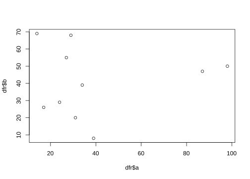
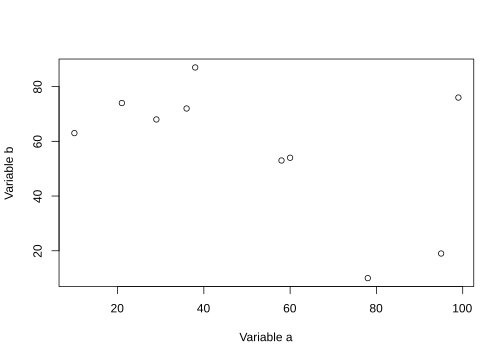
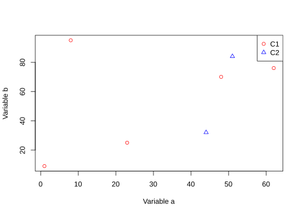
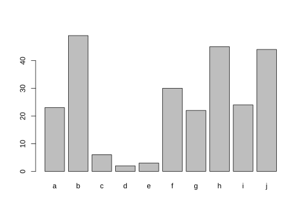
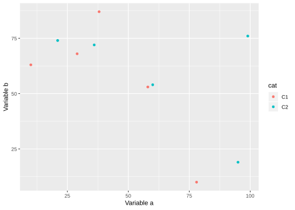
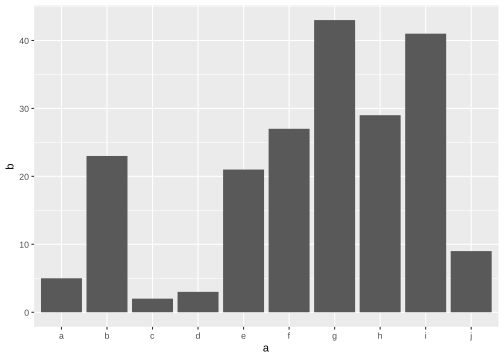

Intro to R
Workshop on RNA-Seq
Roy Francis • 08-Dec-2019
R is a programming language for statistical computing, and data wrangling. It is open-source, widely used in data science, has a wide range of functions and algorithms for graphing and data analyses.
1 Assignment operator
Variables are assigned usually using the <- operator. The = operator also works in a similar way for most part.
x <- 4
x = 4
x## [1] 42 Arithmetic operators
The commonly used arithmetic operators are shown below returning a number.
x <- 4
y <- 2
# add
x + y
# subtract
x - y
# multiply
x * y
# divide
x / y
# modulus
x %% y
# power
x ^ y## [1] 6
## [1] 2
## [1] 8
## [1] 2
## [1] 0
## [1] 163 Logical operators
Logical operators return a logical TRUE or FALSE.
# equal to?
x == y
# not equal to?
x != y
# greater than?
x > y
# less than?
x < y
# greater than or equal to?
x >= y
# less than or equal to?
x <= y## [1] FALSE
## [1] TRUE
## [1] TRUE
## [1] FALSE
## [1] TRUE
## [1] FALSE4 Data types
class(1)
class("hello")
class(T)## [1] "numeric"
## [1] "character"
## [1] "logical"x <- c(2,3,4,5,6)
y <- c("a","c","d","e")
z <- factor(c("a","c","d","e"))
class(z)## [1] "factor"x <- matrix(c(2,3,4,5,6,7),nrow=3,ncol=2)
class(x)
str(x)## [1] "matrix"
## num [1:3, 1:2] 2 3 4 5 6 7dfr <- data.frame(x = 1:3, y = c("a", "b", "c"))
print(dfr)## x y
## 1 1 a
## 2 2 b
## 3 3 cclass(dfr)## [1] "data.frame"str(dfr)## 'data.frame': 3 obs. of 2 variables:
## $ x: int 1 2 3
## $ y: Factor w/ 3 levels "a","b","c": 1 2 35 Accessors
Vectors positions can be accessed using []. R follows 1-based indexing.
x <- c(2,3,4,5,6)
x
x[2]## [1] 2 3 4 5 6
## [1] 3Dataframe or matrix positions can be accessed using [] specifying row and column like [row,column].
dfr <- data.frame(x = 1:3, y = c("a", "b", "c"))
dfr
dfr[1,]
dfr[,1]
dfr[2,2]## x y
## 1 1 a
## 2 2 b
## 3 3 c
## x y
## 1 1 a
## [1] 1 2 3
## [1] b
## Levels: a b c6 Functions
# generate 10 random numbers between 1 and 200
x <- sample(x=1:200,10)
x
# length
length(x)
# sum
sum(x)
# mean
mean(x)
# median
median(x)
# min
min(x)
# log
log(x)
# exponent
exp(x)
# square-root
sqrt(x)
# round
round(x)
# sort
sort(x)## [1] 72 97 200 50 121 129 166 23 126 133
## [1] 10
## [1] 1117
## [1] 111.7
## [1] 123.5
## [1] 23
## [1] 4.276666 4.574711 5.298317 3.912023 4.795791 4.859812 5.111988 3.135494
## [9] 4.836282 4.890349
## [1] 1.858672e+31 1.338335e+42 7.225974e+86 5.184706e+21 3.545131e+52
## [6] 1.056789e+56 1.238466e+72 9.744803e+09 5.261441e+54 5.769871e+57
## [1] 8.485281 9.848858 14.142136 7.071068 11.000000 11.357817 12.884099
## [8] 4.795832 11.224972 11.532563
## [1] 72 97 200 50 121 129 166 23 126 133
## [1] 23 50 72 97 121 126 129 133 166 200Some useful string functions.
a <- "sunny"
b <- "day"
# join
paste(a, b)
# find a pattern
grep("sun", a)
# number of characters
nchar("sunny")
# to uppercase
toupper("sunny")
# to lowercase
tolower("SUNNY")
# replace pattern
sub("sun", "fun", "sunny")
# substring
substr("sunny", start=1, stop=3)## [1] "sunny day"
## [1] 1
## [1] 5
## [1] "SUNNY"
## [1] "sunny"
## [1] "funny"
## [1] "sun"Some general functions
print("hello")
print("world")
cat("hello")
cat(" world")
cat("\nhello\nworld")## [1] "hello"
## [1] "world"
## hello world
## hello
## world7 Merging
Two strings can be joined together using paste().
a <- "sunny"
b <- "day"
paste(a, b)
paste(a, b, sep="-")## [1] "sunny day"
## [1] "sunny-day"The function c() is used to concatenate objects.
a <- "sunny"
b <- "day"
c(a,b)## [1] "sunny" "day"The function cbind() is used to join two dataframes column-wise.
dfr1 <- data.frame(x = 1:3, y = c("a", "b", "c"))
dfr2 <- data.frame(p = 4:6, q = c("d", "e", "f"))
dfr1
dfr2
cbind(dfr1,dfr2)## x y
## 1 1 a
## 2 2 b
## 3 3 c
## p q
## 1 4 d
## 2 5 e
## 3 6 f
## x y p q
## 1 1 a 4 d
## 2 2 b 5 e
## 3 3 c 6 fSimilarily, rbind() is used to join two dataframes row-wise.
dfr1 <- data.frame(x = 1:3, y = c("a", "b", "c"))
dfr2 <- data.frame(x = 4:6, y = c("d", "e", "f"))
dfr1
dfr2
rbind(dfr1,dfr2)## x y
## 1 1 a
## 2 2 b
## 3 3 c
## x y
## 1 4 d
## 2 5 e
## 3 6 f
## x y
## 1 1 a
## 2 2 b
## 3 3 c
## 4 4 d
## 5 5 e
## 6 6 fTwo dataframes can be merged based on a shared column using the merge() function.
dfr1 <- data.frame(x = 1:4, p = c("a", "b", "c","d"))
dfr2 <- data.frame(x = 3:6, q = c("l", "m", "n","o"))
dfr1
dfr2
merge(dfr1,dfr2,by="x")
merge(dfr1,dfr2,by="x",all.x=T)
merge(dfr1,dfr2,by="x",all.y=T)
merge(dfr1,dfr2,by="x",all=T)## x p
## 1 1 a
## 2 2 b
## 3 3 c
## 4 4 d
## x q
## 1 3 l
## 2 4 m
## 3 5 n
## 4 6 o
## x p q
## 1 3 c l
## 2 4 d m
## x p q
## 1 1 a <NA>
## 2 2 b <NA>
## 3 3 c l
## 4 4 d m
## x p q
## 1 3 c l
## 2 4 d m
## 3 5 <NA> n
## 4 6 <NA> o
## x p q
## 1 1 a <NA>
## 2 2 b <NA>
## 3 3 c l
## 4 4 d m
## 5 5 <NA> n
## 6 6 <NA> o8 Packages
R packages extend the functionality of base R. R packages are stored in repositories of which the most commonly used is called CRAN (The Comprehensive R Archive Network).
Packages are installed using the function install.packages(). Let’s install the graphics and plotting package ggplot2 which will be useful in later sections.
install.packages("ggplot2",dependencies=TRUE)Packages on BioConductor can be installed as follows:
source("https://bioconductor.org/biocLite.R")
biocLite("biomaRt")Packages on GitHub can be installed using the function install_github() from package devtools.
Packages can also be installed from a local zipped file by providing a local path ans setting type="source".
install.packages("./dir/package.zip",type="source")Inside RStudio, installing packages is much easier. Go to the Packages tab and click Install. In the window that opens up, you can find your package by typing into the Packages field and clicking Install. Bioconductor packages can be added to this list by setting it using setRepositories().
9 Graphics
9.1 Base
R is an excellent tool for creating graphs and plots. The graphic capabilities and functions provided by the base R installation is called the base R graphics. Numerous packages exist to extend the functionality of base graphics.
We can try out plotting a few of the common plot types. Let’s start with a scatterplot. First we create a data.frame as this is the most commonly used data object.
dfr <- data.frame(a=sample(1:100,10),b=sample(1:100,10))Now we have a dataframe with two continuous variables that can be plotted against each other.
plot(dfr$a,dfr$b)
This is probably the simplest and most basic plots. We can modify the x and y axis labels.
plot(dfr$a,dfr$b,xlab="Variable a",ylab="Variable b")
We can change the point to a line.
plot(dfr$a,dfr$b,xlab="Variable a",ylab="Variable b",type="b")
Let’s add a categorical column to our dataframe.
dfr$cat <- rep(c("C1","C2"),each=5)And then colour the points by category.
# subset data
dfr_c1 <- subset(dfr,dfr$cat == "C1")
dfr_c2 <- subset(dfr,dfr$cat == "C2")
plot(dfr_c1$a,dfr_c1$b,xlab="Variable a",ylab="Variable b",col="red",pch=1)
points(dfr_c2$a,dfr_c2$b,col="blue",pch=2)
legend(x="topright",legend=c("C1","C2"),
col=c("red","blue"),pch=c(1,2))
Let’s create a barplot.
ldr <- data.frame(a=letters[1:10],b=sample(1:50,10))
barplot(ldr$b,names.arg=ldr$a)
9.2 Grid
Grid graphics have a completely different underlying framework compared to base graphics. Generally, base graphics and grid graphics cannot be plotted together. The most popular grid-graphics based plotting library is ggplot2.
Let’s create the same plot are before using ggplot2. Make sure you have the package installed.
library(ggplot2)
ggplot(dfr,aes(x=a,y=b,colour=cat))+
geom_point()+
labs(x="Variable a",y="Variable b")
It is generally easier and more consistent to create plots using the ggplot2 package compared to the base graphics.
Let’s create a barplot as well.
ggplot(ldr,aes(x=a,y=b))+
geom_bar(stat="identity")
10 Input/Output
Input and output of data and images is an important aspect with data analysis.
10.1 Text
Data can come in a variety of formats which needs to be read into R and converted to an R data type.
Text files are the most commonly used input. Text files can be read in using the function read.table. We have a sample file to use: iris.txt.
dfr <- read.table("iris.txt",header=TRUE,stringsAsFactors=F)This reads in a tab-delimited text file with a header. The argument sep='\t' is set by default to specify that the delimiter is a tab. stringsAsFactors=F setting ensures that character columns are not automatically converted to factors.
It’s always a good idea to check the data after import.
head(dfr)str(dfr)Check ?read.table for other wrapper functions to read in text files.
Let’s filter this data.frame and create a new dataset.
dfr1 <- dfr[dfr$Species == "setosa",]And we can write this as a text file.
write.table(dfr1,"iris-setosa.txt",sep="\t",row.names=F,quote=F)sep="\t" sets the delimiter to tab. row.names=F denotes that rownames should not be written. quote=F specifies that doubles must not be placed around strings.
10.2 Images
Let’s take a look at saving plots.
10.3 Base graphics
The general idea for saving plots is open a graphics device, create the plot and then close the device. We will use png here. Check out ?png for the arguments and other devices.
dfr <- data.frame(a=sample(1:100,10),b=sample(1:100,10))
png(filename="plot-base.png")
plot(dfr$a,dfr$b)
dev.off()10.4 ggplot2
The same idea can be applied to ggplot2, but in a slightly different way. First save the file to a variable, and then export the plot.
p <- ggplot(dfr,aes(a,b)) + geom_point()
png(filename="plot-ggplot-1.png")
print(p)
dev.off()ggplot2 also has another easier helper function to export images.
ggsave(filename="plot-ggplot-2.png",plot=p)11 Getting help
- Use
?functionto get function documentation - Use
??blato search for a function - Use
args(function)to get the arguments to a function - Go to the package CRAN page/webpage for vignettes
- R Cookbook: General purpose reference.
- Quick R: General purpose reference.
- Stackoverflow: Online community to find solutions to your problems.
12 Session info
## R version 3.6.0 (2017-01-27)
## Platform: x86_64-pc-linux-gnu (64-bit)
## Running under: Ubuntu 16.04.6 LTS
##
## Matrix products: default
## BLAS: /home/travis/R-bin/lib/R/lib/libRblas.so
## LAPACK: /home/travis/R-bin/lib/R/lib/libRlapack.so
##
## locale:
## [1] LC_CTYPE=en_US.UTF-8 LC_NUMERIC=C
## [3] LC_TIME=en_US.UTF-8 LC_COLLATE=en_US.UTF-8
## [5] LC_MONETARY=en_US.UTF-8 LC_MESSAGES=en_US.UTF-8
## [7] LC_PAPER=en_US.UTF-8 LC_NAME=C
## [9] LC_ADDRESS=C LC_TELEPHONE=C
## [11] LC_MEASUREMENT=en_US.UTF-8 LC_IDENTIFICATION=C
##
## attached base packages:
## [1] parallel stats4 stats graphics grDevices utils datasets
## [8] methods base
##
## other attached packages:
## [1] fgsea_1.10.1 Rcpp_1.0.3
## [3] enrichR_2.1 pvclust_2.2-0
## [5] rafalib_1.0.0 pheatmap_1.0.12
## [7] edgeR_3.26.8 limma_3.40.6
## [9] DESeq2_1.24.0 SummarizedExperiment_1.14.1
## [11] DelayedArray_0.10.0 BiocParallel_1.18.1
## [13] matrixStats_0.55.0 Biobase_2.44.0
## [15] GenomicRanges_1.36.1 GenomeInfoDb_1.20.0
## [17] IRanges_2.18.3 S4Vectors_0.22.1
## [19] BiocGenerics_0.30.0 biomaRt_2.40.5
## [21] ggplot2_3.2.1 formattable_0.2.0.1
## [23] kableExtra_1.1.0 dplyr_0.8.3
## [25] lubridate_1.7.4 leaflet_2.0.3
## [27] yaml_2.2.0 captioner_2.2.3
## [29] bookdown_0.16 knitr_1.26
##
## loaded via a namespace (and not attached):
## [1] colorspace_1.4-1 rjson_0.2.20 ggsignif_0.6.0
## [4] ellipsis_0.3.0 htmlTable_1.13.3 XVector_0.24.0
## [7] base64enc_0.1-3 rstudioapi_0.10 ggpubr_0.2.4
## [10] farver_2.0.1 bit64_0.9-7 AnnotationDbi_1.46.1
## [13] xml2_1.2.2 splines_3.6.0 geneplotter_1.62.0
## [16] zeallot_0.1.0 Formula_1.2-3 jsonlite_1.6
## [19] annotate_1.62.0 cluster_2.0.8 shiny_1.4.0
## [22] readr_1.3.1 compiler_3.6.0 httr_1.4.1
## [25] backports_1.1.5 assertthat_0.2.1 Matrix_1.2-17
## [28] fastmap_1.0.1 lazyeval_0.2.2 later_1.0.0
## [31] acepack_1.4.1 htmltools_0.4.0 prettyunits_1.0.2
## [34] tools_3.6.0 gtable_0.3.0 glue_1.3.1
## [37] GenomeInfoDbData_1.2.1 fastmatch_1.1-0 vctrs_0.2.0
## [40] nlme_3.1-139 crosstalk_1.0.0 xfun_0.11
## [43] stringr_1.4.0 rvest_0.3.5 mime_0.7
## [46] lifecycle_0.1.0 XML_3.98-1.20 zlibbioc_1.30.0
## [49] scales_1.1.0 hms_0.5.2 promises_1.1.0
## [52] RColorBrewer_1.1-2 curl_4.3 memoise_1.1.0
## [55] gridExtra_2.3 rpart_4.1-15 latticeExtra_0.6-28
## [58] stringi_1.4.3 RSQLite_2.1.4 genefilter_1.66.0
## [61] checkmate_1.9.4 rlang_0.4.2 pkgconfig_2.0.3
## [64] bitops_1.0-6 evaluate_0.14 lattice_0.20-38
## [67] purrr_0.3.3 labeling_0.3 htmlwidgets_1.5.1
## [70] cowplot_1.0.0 bit_1.1-14 tidyselect_0.2.5
## [73] magrittr_1.5 R6_2.4.1 Hmisc_4.3-0
## [76] DBI_1.0.0 mgcv_1.8-28 pillar_1.4.2
## [79] foreign_0.8-71 withr_2.1.2 survival_2.44-1.1
## [82] RCurl_1.95-4.12 nnet_7.3-12 tibble_2.1.3
## [85] crayon_1.3.4 rmarkdown_1.18 progress_1.2.2
## [88] locfit_1.5-9.1 grid_3.6.0 data.table_1.12.6
## [91] blob_1.2.0 digest_0.6.23 webshot_0.5.2
## [94] xtable_1.8-4 tidyr_1.0.0 httpuv_1.5.2
## [97] munsell_0.5.0 viridisLite_0.3.0End of document